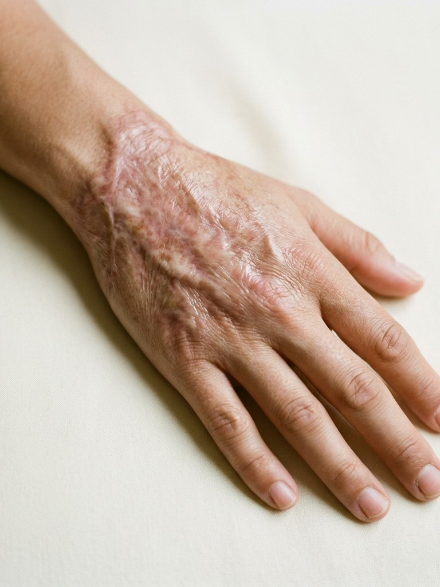
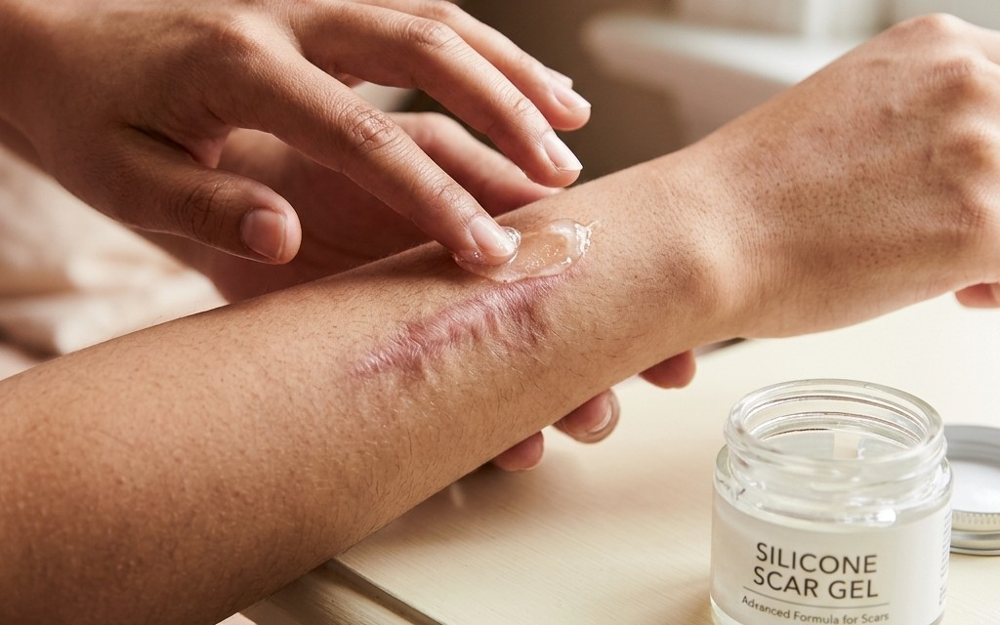

The burn nobody talks about.
Most burns happen at home, to ordinary people, in a second. The injury is quick. The recovery is long, and the second half is almost never explained.

How deep is the burn?
Depth, not size alone, decides how a burn heals and whether it will scar. Select a depth to see it in the skin.
- Layer
- Epidermis only
- Looks like
- Red, dry, no blisters. Typical of sunburn.
- Feels
- Painful, tender
- Heals in
- 3 to 7 days
- Scar risk
- Very low; temporary colour change possible
- Care
- Cool, moisturise, protect from sun
- Layer
- Epidermis and upper dermis
- Looks like
- Blisters, moist, pink or red, blanches when pressed
- Feels
- Very painful, sensitive to air
- Heals in
- 1 to 3 weeks
- Scar risk
- Low to moderate; pigment change is common on darker skin
- Care
- Dressings, infection watch, sun protection for months
- Layer
- Deep dermis
- Looks like
- Mottled red and white, drier, may not blanch
- Feels
- Pressure, less sharp pain
- Heals in
- More than 3 weeks if it heals on its own
- Scar risk
- High: thick, raised or tight scars
- Care
- Often surgical: removal of dead tissue and skin grafting
- Layer
- Through the whole dermis, sometimes deeper
- Looks like
- White, brown, charred or leathery
- Feels
- Little or no pain in the centre (nerves destroyed)
- Heals in
- Cannot heal fully without surgery
- Scar risk
- Very high: contractures and functional loss
- Care
- Hospital, surgery, rehabilitation, long-term scar care
Only a clinician can judge burn depth. Burns often look shallower on day one and deepen over 48 to 72 hours. If in doubt, get it seen.
The first twenty minutes.
First aid changes the outcome more than almost any treatment that follows.
Stop the burning
Remove the person from the source. Put out flames by stop, drop and roll, or smother with a thick blanket. Switch off electricity before touching anyone.
Cool for 20 minutes
Cool, running tap water, not ice or iced water. Start as soon as possible; it still helps up to about three hours after the injury.
Take off rings, watches, tight clothing
Before swelling starts. Do not pull off anything stuck to the skin.
Cover loosely
Clean cling film laid lengthwise, or a clean non-fluffy cloth. Keep the person warm, especially children.
Get help
Use the list on the right to decide how urgently. Pain relief such as paracetamol is reasonable while you travel.
Butter, cooking oil, toothpaste, ash, raw egg, herbal pastes, or ice. They trap heat, add infection risk, and make the wound harder to assess.
Go to hospital now if the burn is:
- Larger than the person’s palm (adult) or any size in a young child
- On the face, hands, feet, genitals, or over a joint
- Deep: white, brown, leathery, or blistering widely
- Electrical (even if it looks small), chemical, or from a fire in an enclosed space
- All the way around a limb, finger or toe
- In a baby, a child, an older adult, or someone with diabetes or low immunity
Brush off dry powder first, then flush with large amounts of running water for at least 20 minutes. Remove contaminated clothing. This includes caustic soda, acids, hair relaxers and some skin-lightening products.
Common causes in Kenyan homes.
Most serious burns are preventable, and most happen in the kitchen.
Hot liquids
Tea, uji, porridge, soup and boiling water cause most toddler scalds. A child can be scalded in under a second.
Paraffin & jiko
Kerosene stoves and lamps, charcoal jikos and gas cooking cause flame and flash burns, especially with loose clothing.
Cooking oil
Oil burns hotter than boiling water and sticks to the skin. Never use water on an oil fire.
Electrical
Faulty wiring, illegal connections and water heaters. Internal injury can be much worse than the skin suggests.
Chemicals
Caustic soda, acids, hair relaxers and unregulated skin-lightening creams cause deep, slowly worsening burns.
Hot surfaces
Irons, hair straighteners, and motorbike exhaust pipes, a common cause of burns on children’s legs.
The part nobody explains.
Closed skin is not finished skin. It is the beginning of scar maturation.
For 12 to 24 months a burn scar is biologically active: it can thicken, tighten, itch, darken or pale. Burned skin has lost its natural defences against sunlight, sweating and stretch. And for many survivors, the hardest part is how it feels to be seen.
- Protect healed burns from the sun for at least a year
- Moisturise and massage as taught: it softens and desensitises
- Wear pressure garments if prescribed, usually most of the day
- Keep moving: stretching prevents tight scars from limiting joints
- Ask for help with itch, pain, sleep and mood. They are part of healing

Stabilise
Cooling, assessment, pain control, tetanus status, and a decision on where to treat.
Wound healing
Dressings and infection watch. Deeper burns may need grafting. Movement starts early.
Scar shaping begins
Silicone, massage and pressure therapy. The best window to prevent thick scars.
Active scar treatment
Injections, laser, needling and release of tight bands, timed to the scar.
Refine
Revision, fat grafting and contour work once the scar has settled.
Five kinds of scar, five different plans.
| Type | Looks like | Boundary | Typical course | Approach |
|---|---|---|---|---|
| Normal / maturing | Flat or slightly raised, pink to dark | Stays within the wound | Softens and fades over 1–2 years | Silicone, massage, sun protection |
| Hypertrophic | Raised, red or dark, firm, itchy | Stays within the wound | Often settles over 1–2 years | Silicone, pressure, injections, laser |
| Keloid | Raised, rubbery, grows beyond the wound | Spreads past the original edges | Rarely settles on its own | Combination therapy; cutting alone often fails |
| Contracture | Tight, pulls skin, limits movement | Across joints and folds | Tightens as it matures | Therapy, release, grafts or flaps |
| Atrophic | Sunken or pitted | Within the wound | Stable | Needling, filler, resurfacing |
From gentle to definitive.
We climb only as high as your scar and your goals require.
Foundation
Silicone sheets or gel, massage, moisturising, strict sun protection, pressure garments where needed.
Injections
Steroid injections to flatten thick scars, sometimes with 5-fluorouracil. Botulinum toxin can reduce tension in selected scars.
Energy & needling
Vascular laser for redness and itch, carefully chosen fractional lasers for texture, and microneedling or radiofrequency needling.
Surgery
Scar release (Z-plasty), skin grafts, flaps, tissue expansion and fat grafting, timed once the scar has matured.
Myths, and what is actually true.
Closed skin is the start of scar maturation, which can take 12 to 24 months. What you do in those months shapes the final result.
Melanin-rich skin has a higher tendency to keloid, thick scars and pigment change. That is a reason for earlier, smarter care, not for giving up.
A tight scar over a joint can quietly limit movement for years. Contractures often begin painlessly.
The wrong device, wrong settings or wrong provider is unsafe. The right wavelength, conservative energy and a test patch can be done safely.
Many survivors carry months of pain, itch, disturbed sleep and anxiety about being seen. Good burn care includes the person, not only the scar.
Many scars improve with layered non-surgical care: silicone, pressure, injections, lasers and needling, with surgery reserved for what remains.
Old scars, even childhood ones, can still be softened, released and re-contoured. Timing affects the approach, not whether help is possible.
Make the kitchen safer.
- Keep kettles, sufurias and hot drinks away from table edges. Never hold a child while drinking something hot
- Cook on back burners and turn pot handles inward
- Store paraffin in labelled, closed containers away from children and from heat
- Set water heaters to 49°C (120°F) or below; test bath water with your elbow
- Cap unused sockets and replace damaged cables. Never improvise connections
- Store caustic soda, acids and relaxers locked away, in original containers
- Teach children: stop, drop and roll; cool a burn under running water
Children and burns
Children’s skin is thinner, so the same exposure burns deeper. Scalds are the most common cause under five. Because children grow, scars can tighten as they do, which is why they need follow-up well beyond healing.
Treatment is planned with parents, around school and growth, aiming for the fewest procedures and the most normal childhood possible.
Read: burn first aid guideBurn care FAQ.
When should I first see a burn specialist?
As early as possible for anything deep, large or on a critical area. For healed burns, ideally within the first few months, while scars are still forming and easiest to shape.
Will my burn scar disappear?
Scars are never erased, but most can be made flatter, softer, less visible and more comfortable. Your plan will state honestly what is realistic.
Are scar treatments safe on dark skin?
Yes, when chosen and set carefully. Conservative energy settings, test patches and treatment sequencing protect pigment and reduce the risk of keloid or dark marks.
Can children be treated for burn scars?
Yes. Care is planned with parents and around growth. Early silicone, massage, sun protection and monitoring prevent many problems.
How long does a scar plan take?
Often 6 to 18 months, in stages. You will see the full roadmap at your first visit.
Do you treat old burn scars from childhood?
Yes. Old scars can often be released, softened and re-contoured. Timing affects the approach, not whether help is possible.
Should I put honey, oil or toothpaste on a burn?
No. Cool the burn under running water for 20 minutes, then cover it loosely with clean cling film or a clean cloth, and get it assessed.
Can I get burn care and aesthetic treatment in the same clinic?
Yes. The same careful planning applies to both, and many patients combine scar care with skin or hair treatment.
It is not too late to feel at home in your skin.
Old burn or new, there is a plan.